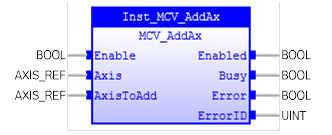

Superimposes 2 or more movements to build up a more complex movement profile.

MCV_AddAx is used to superimpose 2 or more movements to build up a more complex movement profile. It takes the demand position changes from the specified axis and adds them to any movements running on the base axis (‘AxisToAdd’ input).
After being issued, the link between the two axes remains until broken and any further moves on the specified axis will be added to the base axis (‘AxisToAdd’ input).
The specified axis can be any axis and does not have to physically exist in the system.
MCV_AddAx therefore allows an axis to perform the moves specified on 2 axes added together.
AxisToAdd has a position feedback sensor.
MCV_AddAx does not affect the PlcOpen machine state.
Make sure the input and output parameters are of data type indicated in the table below.
When using an encoder with (TrioBASIC command) SERVO = OFF, the MPOS is copied into the DPOS. This allows ADDAX to be used to sum encoder inputs.
An error will be generated when the base axis is changed during ‘Enable = TRUE’.
MCV_AddAx is equivalent to TrioBASIC command ADDAX . Please refer to TrioBasic Help for more information.
|
Name |
Data Type |
Description |
|
INPUTS |
||
|
Enable |
BOOL |
Enable execution. |
|
Axis |
AXIS_REF |
Reference to the secondary axis, axis to superimpose. |
|
AxisToAdd |
AXIS_REF |
Reference to the base axis |
|
OUTPUTS |
||
|
Enabled |
BOOL |
The FB execution is enabled. |
|
Busy |
BOOL |
Indicates that the FB has control on the axis |
|
Error |
BOOL |
Signals that an error has occurred within the FB |
|
ErrorID |
UINT |
Error identification |